Description
CyberCuranto es un equipo desarrollador de videojuegos conformado por ex-estudiantes de la carrera de Cine y Televisión de la Universidad de Chile, quienes están incursionando en el mundo de los videojuegos con su primer proyecto llamado SAI: Servicio de Auxilio Inmediato.
History
Creación
En el año 2022, un grupo de estudiantes de Cine y Televisión de la Universidad de Chile se reunen para crear un videojuego como proyecto para un taller, con el objetivo de explorar otras formas de contar historias. Inicialmente concebido como un pequeño experimento, este videojuego llamado SAI: Servicio de Auxilio Inmediato fue evolucionando hasta llegar a ser un RPG narrativo que ha sido llevado a múltiples eventos y ferias de videojuegos y que, a futuro, se espera continuar su desarrollo para ser un juego completo.
Proyectos
Como ex-estudiantes de Cine, desarrollar un videojuego resulta curioso; sin embargo, la experimentación es su fuerte. La idea del equipo no es limitarse a crear películas interactivas, sino tomar aspectos tanto del cine como de los videojuegos para crear experiencias que puedan resultar únicas y llamativas. A futuro, el equipo no se cierra a experimentar con otros formatos.
Presencia
En agosto de 2023 estuvieron presentes en la Festigame como parte del espacio de desarrolladores chilenos de VGChile durante los tres días que duró el evento, mostrando SAI por primera vez a una gran cantidad de personas. Desde entonces, CyberCuranto ha estado presente en múltiples eventos y ferias de videojuegos, como la ExpoKokoro y la Gamedev Fest en 2024, las cuales fueron instancias muy importantes para ampliar el alcance del videojuego al público gamer nacional e internacional.
Projects
Videos
There are currently no trailers available for CyberCuranto. Check back later for more or contact us for specific requests!
Logo & Icon
{kind=link}
{kind=link}
Team & Repeating Collaborator
- Melissa Ocampos
- CyberCuranto
- Hernán Zapata
- CyberCuranto
- Diego Velozo
- CyberCuranto
- Nicolás Lagos
- CyberCuranto
- Belén Catalán
- CyberCuranto
- Valentina Catalán
- Colaboradora
- Luz Fernández
- Colaboradora
- Javier Rojas
- Colaborador
- Tomás Meza
- Colaborador
Contact
- Consultas
- cybercurantorpg@gmail.com
- instagram.com/sai_videogame/
- twitter.com/sai_videogame
- web.facebook.com/sai.videogame